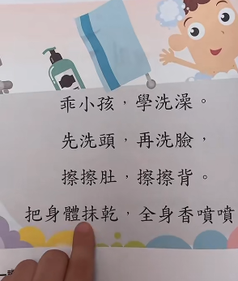

『猫见爱』盐酸希汐片🏳⚧
@HiyouNeko
@thomaslim2019 不对，这事应该爸爸教，妈妈怎么教妈妈教不了

老林永生
@thomaslim2019
包皮必须翻开洗
这个教育是不完整的！
我有一个老处男朋友40岁才结婚，婚前去检查。他没有切包皮，妈妈也没教怎么洗。医生把他包皮翻开，完全就是撕裂的疼，打开里面是40年的舍利子级别的包皮垢，乳酪状态，直接掉落地。医生护士都没事，我朋友自己当场吐一地都是。 https://t.co/VuqQxOqm6p